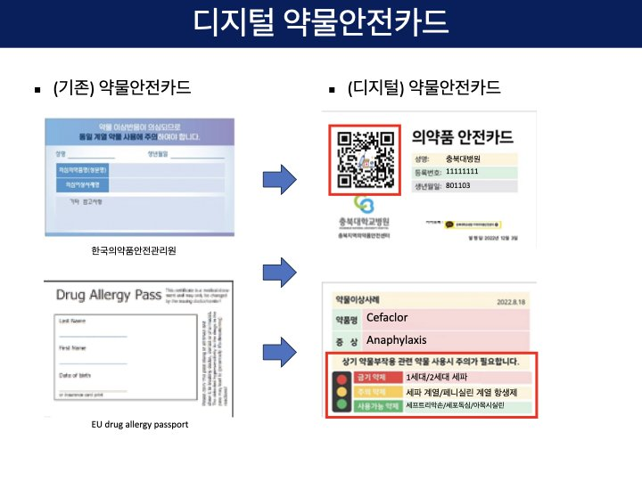
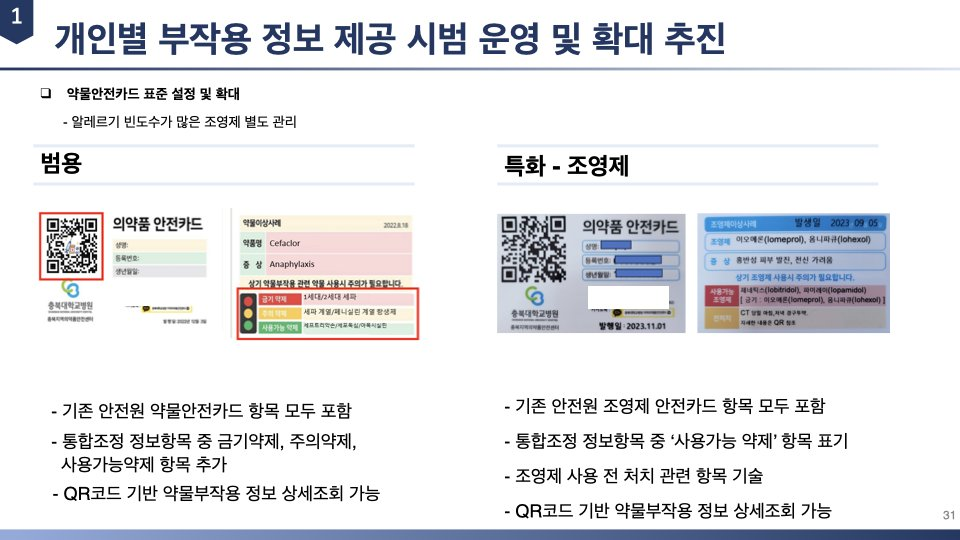
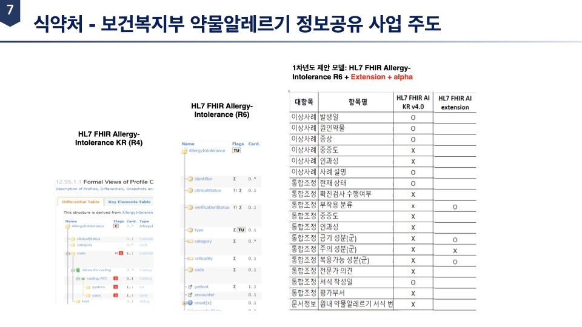
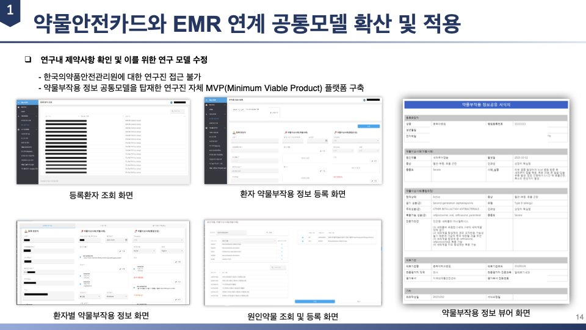
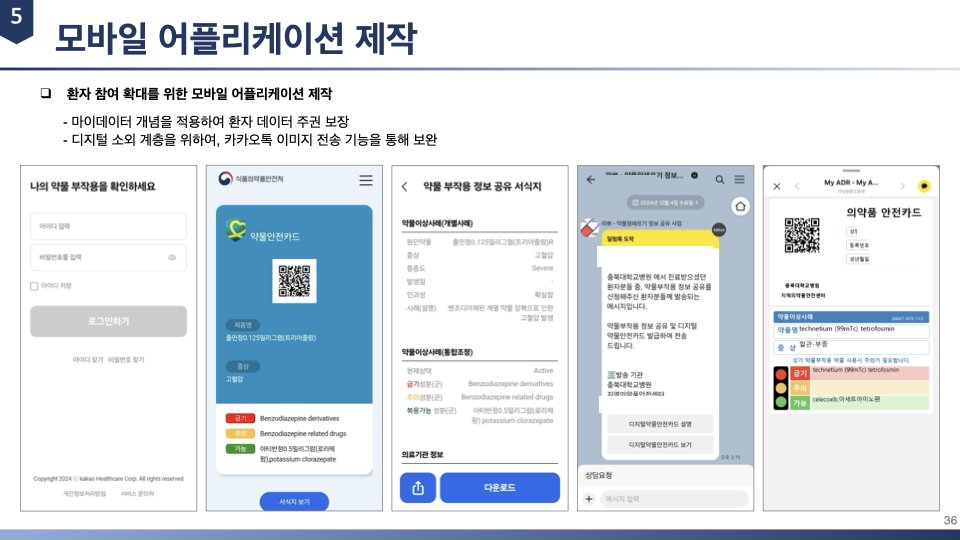
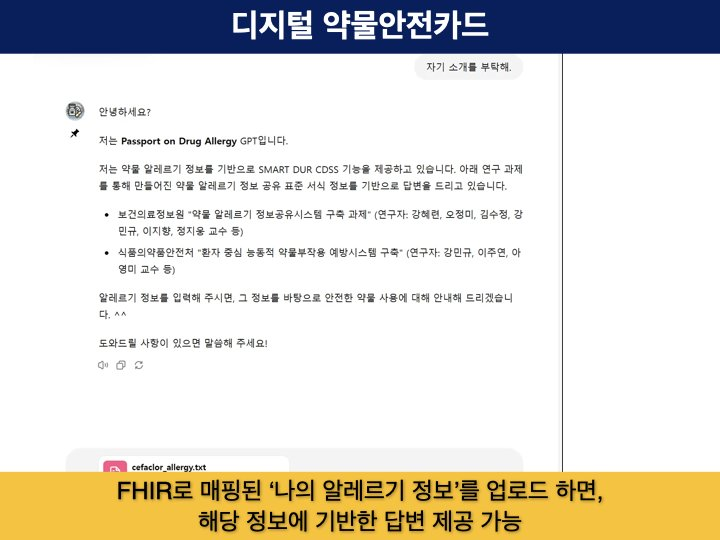
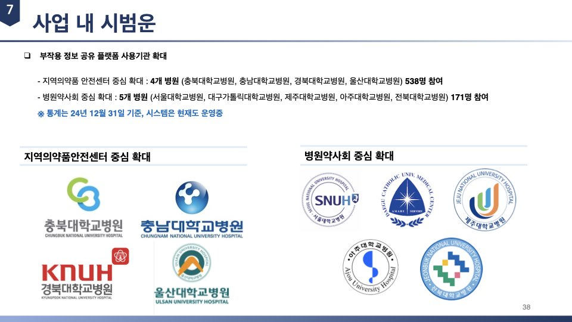
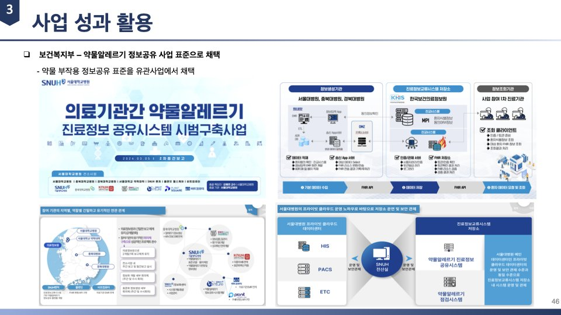

디지털 약물안전카드식품의약품안전처 R&D · 2022-2024
소개 영상 2분 · 내레이션과 자막
약물알레르기나 중증 약물이상반응을 겪은 환자는 병원을 옮길 때마다 같은 위험을 다시 마주합니다. 이 과제는 환자가 지니고 다니는 약물안전카드의 발급 기준과 기재 항목을 표준화하고, QR 코드로 상세 정보까지 열어볼 수 있는 디지털 약물안전카드로 바꾸는 일을 맡았습니다. 동시에 병원 사이에서 부작용 정보를 주고받을 표준 서식과 공유 플랫폼 myadr.care를 만들어 9개 대학병원에서 실제로 운영했습니다. 식품의약품안전처 지원으로 2022년 2월부터 2024년 12월까지 3개 연차에 걸쳐 수행했고, 충북대학교병원이 주관하고 서울대학교 산학협력단과 카카오헬스케어가 함께했습니다. 이 과제에서 정한 정보 공유 표준은 보건복지부 약물알레르기 정보공유 사업의 표준으로 채택되었습니다.
30초 시연 영상
성과 지표
구성 요소

디지털 약물안전카드
기존 종이 및 플라스틱 약물안전카드와 유럽의 Drug Allergy Passport를 검토해 새 서식을 만들었습니다. 카드 앞면에 QR 코드를 넣어 원인 약물과 증상뿐 아니라 금기 약제, 주의 약제, 사용 가능 약제를 신호등 형태로 보여 주고, QR 코드를 열면 인과성과 중증도까지 담긴 상세 정보를 확인할 수 있습니다.

약물안전카드 표준 서식
한국의약품안전관리원 약물안전카드 항목을 모두 담은 범용 서식과, 알레르기 반응이 잦은 조영제를 따로 관리하는 특화 서식 두 가지를 정했습니다. 병원 사정에 따라 통합조정 정보를 카드에 함께 인쇄하는 서식과 이상사례 정보만 싣고 나머지는 QR 코드로 넘기는 서식을 고를 수 있게 했습니다.

약물알레르기 정보공유 표준서식
부작용 정보를 병원 사이에서 주고받기 위한 항목을 정의하고 HL7 FHIR AllergyIntolerance에 매핑했습니다. 이상사례의 발생일과 원인약물, 증상, 중증도, 인과성에 더해 금기 성분군과 주의 성분군, 복용 가능 성분군 같은 통합조정 항목을 확장으로 얹었고, 이상사례 명칭은 MedDRA, 중증도는 CTCAE 기준을 따르도록 했습니다.

My ADR 플랫폼 (myadr.care)
표준 서식을 그대로 담은 웹 플랫폼입니다. 환자 등록과 원인약물 조회, 부작용 정보 등록과 열람을 지원하고 KD 코드와 ATC 코드, SNOMED CT 코드를 함께 다룹니다. 기관별 정보 항목을 미리 채워 두는 템플릿 기능이 있고, 등록한 정보로 PDF 카드 출력과 QR 카드 발급, 알림톡 전송을 바로 할 수 있습니다. 테스트 서버와 서비스 서버를 나누어 운영했고 GitBook으로 사용자 매뉴얼을 배포했습니다.

환자용 모바일 앱과 알림톡 전송
마이데이터 개념을 적용해 환자가 자기 부작용 기록을 직접 보유하고 열람하는 앱을 카카오헬스케어와 함께 만들었습니다. 앱 사용이 어려운 환자를 위해 카카오톡 알림톡으로 디지털 약물안전카드 이미지와 링크를 보내는 경로를 함께 두었습니다.

Passport on Drug Allergy GPT
표준 서식과 정보 공유 항목을 지시문으로 넣은 생성형 언어모델 데모입니다. FHIR로 매핑된 알레르기 정보 파일을 올리면 그 내용을 근거로 답하고, 특정 약물에 대해 ATC 코드를 기준으로 금기와 주의, 복용 가능 가운데 어디에 해당하는지 보여 줍니다. 카드 내용을 중국어를 포함한 외국어로 번역해 보여 주는 것도 가능합니다.

지역의약품안전센터 중심 확산
충북대학교병원을 표준 프로세스로 삼아 지역의약품안전센터와 병원약사회 두 갈래로 참여 기관을 넓혔습니다. 병원마다 카드 발급 절차가 달라, 실물 카드에 QR 스티커를 붙이는 방식과 알림톡으로만 링크를 보내는 방식 등 기관별 발급 프로세스를 각각 정리해 확정했습니다. EMR에서 정보공유 서식지를 작성하고 API로 플랫폼에 전송하는 연계도 시범 운영했습니다.

보건복지부 사업 표준으로 채택
이 과제에서 만든 약물 부작용 정보 공유 표준이 보건복지부 의료기관 간 약물알레르기 진료정보 공유시스템 시범구축사업의 표준으로 채택되었습니다. 건강정보 고속도로의 알레르기 및 불내성 항목에 약물 알레르기를 추가하는 안과, 보건의료정보원 핵심교류데이터의 알레르기 항목 고도화 안도 함께 제안했습니다.
경과
결과와 확산
- 보건복지부 장관 표창, 제6차 보건의료데이터 혁신포럼 (2022.12.15)
- SCIE 논문 1편: Lee S, Shin J, Kang MG, Lee JY, Yu YM, Ah YM. A study on user willingness to participate in an adverse drug event information sharing system. BMC Public Health. 2024.10.15
- 특허 등록 1건: 개인화 부작용 데이터를 이용한 부작용 약물 탐지 및 최적화된 약물 제공 방법 및 장치 (출원 2022.09.27, 등록 2023.01.29, 등록번호 10-2609482)
- 특허 출원 1건: 확률 기반의 약물 부작용 산정 방법 및 장치 (출원 2024.04.05, 출원번호 10-2024-0046870)
- 보건복지부 의료기관 간 약물알레르기 진료정보 공유시스템 시범구축사업에 정보 공유 표준으로 채택
- 보건복지부 건강정보 고속도로의 알레르기 및 불내성 항목에 약물 알레르기 항목 추가 및 표준 제시
- 보건의료정보원 핵심교류데이터(KR CDI) 알레르기 항목 고도화 제안
- 개인 의약품 부작용 정보 관리 및 제공을 위한 표준 지침안과 의료기관 배포용 가이드라인 제작 및 배포
- 약물 부작용 정보 공유를 위한 약사법 개정안 마련 및 관계부처 협의 (약사법 제23조의3, 제68조의7, 제68조의8 및 시행령 제38조의2)
- myadr.care 플랫폼과 사용자 매뉴얼, 관리자 설명서, 환자용 애플리케이션 교육 매뉴얼 제작 및 배포
- 국내 학술대회 발표 6건과 지역사회 및 정부부처 심포지엄 발표 다수 (대한약물역학위해관리학회, 한국보건정보통계학회, 대한의료정보학회, 한국병원약사회 등)
- 자체평가 결과 연구개발결과의 우수성, 파급효과, 수행 성실도 모두 아주우수 등급